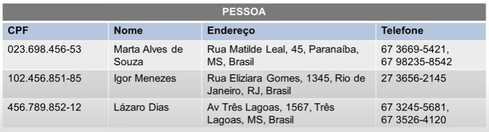
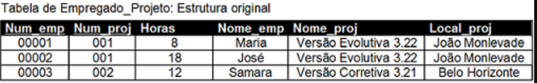
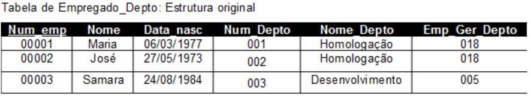

Um banco de dados consiste em uma compilação organizada de informações ou dados estruturados, os quais são guardados de forma que possam ser prontamente acessados, administrados e atualizados.
O diagrama er (entidade-relacionamento) ele é um desenho visual que demonstra a organização lógica de um sistema que armazena informações e facilita o entendimento.
- A entidade é uma das características do diagrama er, ela é representada por retângulo. Tendo alguns dados da pessoa que faz a compra no sistema ou os dados de algum produto a venda disponível no estoque.
- Já os atributos é um aspecto presente na entidade como por exemplo: código do cliente, primeiro e o último nome, cpf e etc para pessoas. Já para produtos à venda seria o código do produto, nome, marca, categoria, preço e etc. Sendo representado por um retângulos
- Outrossim, relacionamento demonstra como as as entidades estão associadas conectando-as. Podendo ser N:N (muitos-para-muitos, por apeas abrigar foreing keys ela é denominada como entidade fraca),N:1 (muitos-para-um, a foreing key sempre fica do lado do N), 1:1 (um-para-um). Se caracterizando por um losango conectando as entidades.
- A Primary Key (chave primária) tem valor único e é usada de maneira única para inter-relacionar as tabelas. Para identifica-la normalmente ela é sublinhada no diagrama.
- A Foreign key (chave estrangeira) é a primary key importada nas outra entidades.


Normalização é o processo de organização da tabela de dados para eliminar repetições e garantir segurança e ajuda facilitando a manutenção caso necessário.
1FN (Primeira forma normal)- Contém valores atômicos.
2FN (Segunda forma normal)- Não contém dependências parciais.
3FN (Terceira forma normal)- Não contém dependência transitivas.
SQL é utilizado para manipular e gerenciar bancos de dados, o sistema é padronizado universalmente e é possível executar as funções de forma rápida e eficiente.

Principais funções:
-
Consultar dados =
- “Select” ( selecionar alguma coluna ou aplicar filtro). Manipulação de dados =
- “Insert” (acrescentar mais linhas a tabela)
- “Update” (atualizar tabela)
- “Delete” (deletar informações desnecessárias). Definição de dados =
- “Create” (criar tabela)
- “Alter” (alterar)
- “Drop” (excluir alguma informação).